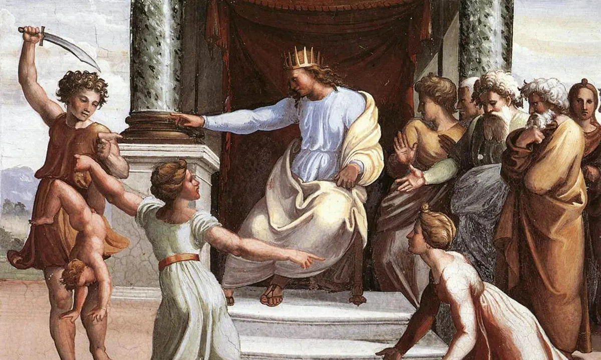
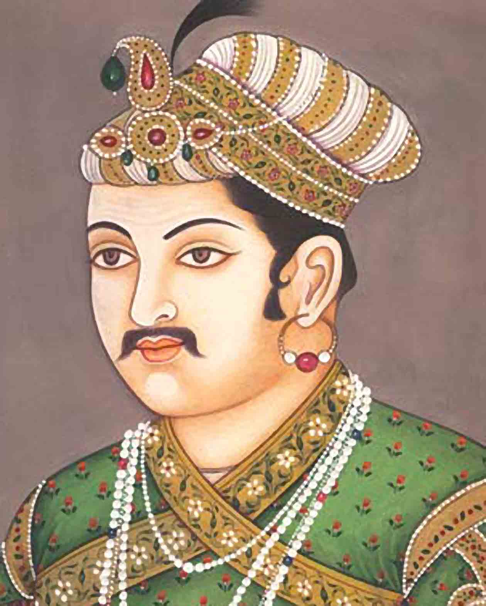
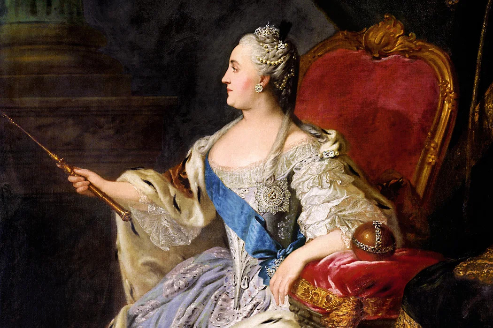
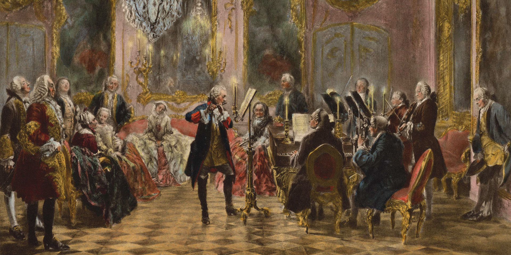

The 7 Most Fascinating Philosopher-Kings in History
If you like reading about philosophy, here's a free, weekly newsletter with articles just like this one: Send it to me!
Marcus Aurelius… who else?
This one was predictable. Let’s get him out of the way first, so that we can talk about the juicier figures down below.
The modern fascination with (popularised) Stoicism has made Marcus almost into a household name. The Daily Stoic, a YouTube channel with over a million subscribers, posts almost exclusively about Marcus Aurelius – although one would think that the slave Epictetus has much more of relevance to say to the modern, exploited employee than an emperor of Rome, the most powerful man of his time.
Marcus Aurelius was Roman Emperor from 161 to 180 AD, and is generally seen as the model of the (western tradition) philosophy-king. He was, untypically for a Roman emperor, a thoughtful, humble man, who kept a diary of his thoughts and views called “Notes to Myself,” rather than, as others would attempt similar works much later, “My Fight,” “Quotations From Chairman Mao,” “Mastering Bolshevism,” or “I Am the Winner.” The last one is not a joke. It seems to be the actual title of Trump’s autobiography. If this man ever picks up a Marcus Aurelius edition, I suspect that they might both instantly annihilate and disappear in a puff of pure energy.
We talked in an older article about Marcus Aurelius in more detail, and, of course, there’s our recent video about him:
Marcus was a practitioner of Stoicism, a philosophy that emphasizes the importance of reason, virtue, and self-control. In his famous book, which is often (wrongly) titled “Meditations,” Marcus Aurelius reflects on society, the workings of the world, and on how to live a virtuous life while being a part of this world.
As emperor, Marcus Aurelius faced many challenges, including wars on multiple fronts and political unrest within the empire. Still, all his life he tried to follow Stoic principles and to rule justly and with compassion for his subjects. He died while fighting the barbarians (one of whose descendants is writing these words now) in a forest near what today is Vienna.
His diary was with him in his military expedition tent.
Ashoka – The Buddhist Emperor
Emperor Ashoka.
Ha — got you with this one. Bet most of you hadn’t heard of him previously (I hadn’t).
Ashoka was the third emperor of the Maurya Empire from 268 to 232 BC. Although today one often hears that it was the British rule that unified India, Ashoka’s empire already stretched Afghanistan in the west to what today we call Bangladesh in the east and south almost to the tip of the Indian subcontinent. Much of him is known only from writings that date from long after his death, so the historical details are a bit shaky.
Perhaps somewhat surprisingly for someone who is credited as being a non-violent philosopher king, the first thing Ashoka did was to kill his brothers (99 of them!) so that he could ascend to the throne.
After that he unleashed another brutal war (not unlike, one would think, Marcus’ expedition to conquer Germania) which finally made him repent and renounce violence. Interestingly, he did not renounce it publicly before the people he brutally attacked, but only in edicts that the victims of his violence never saw.
Similarly to St Paul’s conversion in the Christian tradition, the sources seem to exaggerate Ashoka’s change of mind from a vicious, tyrannical despot to a paragon of Buddhist virtue.
According to Wikipedia:
[According to] John S. Strong, it is sometimes helpful to think of Ashoka’s messages as propaganda by a politician whose aim is to present a favourable image of himself and his administration, rather than record historical facts.
Not quite the philosopher-king, then. His praise comes mainly from Buddhist sources, but then, with the King’s fondness for Buddhism (and presumably the favours that the Buddhist establishment could secure from him), it’s hardly surprising that the Buddhist scribes would express their gratitude to their benefactor – and perhaps look away from the less favourable aspects of his personality.
Other sources are more forthcoming with tabloid press detail. According to the Ashokavadana, the holy man slowly tortured Chandagirika (whoever that was) to death in the “hell” prison. He He ordered a massacre of 18,000 heretics for a misdeed of one. He launched a pogrom against the Jains, announcing a bounty on the head of any heretic; this resulted in the beheading of his own brother – Vitashoka (this paragraph from Wikipedia). So had missed one brother when he slaughtered the other 99.
Well, perhaps better to stop here. This Ashoka makes even Prince Andrew look like an enlightened saint.
Solomon – The Wise King of Israel

The Judgement of Solomon, by Raphael.
Solomon was the King of Israel from 970 to 931 BC, and is known for his wisdom and wealth. According to the Bible, he was visited by God in a dream. God asked him what he desired, and Solomon said, wisdom; so that he could rule his people better. God, pleased that Solomon had not asked for more mundane rewards, granted him great wisdom.
Which is not to say that the holy man was indifferent to riches.
In a single year, according to 1 Kings 10:14, Solomon collected tribute amounting to 666 talents (18,125 kilograms) of gold. Solomon is described as surrounding himself with all the luxuries and the grandeur of an Eastern monarch, and his government prospered. He entered into an alliance with Hiram I, king of Tyre, who in many ways greatly assisted him in his numerous undertakings. (Wikipedia)
It is not likely that he could sell his wisdom alone for such a price. “Collecting tribute” presumably involved more hands-on tactics, and surrounding oneself with excessive luxuries is also not a typical sign of great wisdom. So perhaps God changed his mind about granting Solomon’s wish after all, but the king had no reliable way of verifying whether he had obtained the divine favour or not.
Your ad-blocker ate the form? Just click here to subscribe!
His great wisdom is generally seen as being demonstrated in the court case of the two women who claim to be mothers of the same child:
Perhaps the best known story of his wisdom is the Judgment of Solomon; two women each lay claim to being the mother of the same child. Solomon easily resolved the dispute by commanding the child to be cut in half and shared between the two. One woman promptly renounced her claim, proving that she would rather give the child up than see it killed. Solomon declared the woman who showed compassion to be the true mother, entitled to the whole child.
Well, yes, this is clever. But is this the maximal level of wisdom attainable at that time, one that requires divine intervention to be bestowed on a mere mortal?
On the other hand, it is said that Solomon, as instructed by his father David, “began his reign with an extensive purge, including his father’s chief general, Joab, among others, and further consolidated his position by appointing friends throughout the administration, including in religious positions as well as in civic and military posts.” (Wikipedia). Again, not necessarily the way we would like to imagine the management skills of a true philosopher-king.
And let’s not mention that the philosopher-king had 700 wives and 300 concubines – the wisdom of this must elude anyone who hasn’t received an extra-wisdom infusion from above. Still, the great philosopher, not content with a thousand women, went lusting after the Queen of Sheba as soon as he became aware of her existence – and then gave her “all her desire, whatsoever she asked” (1 Kings 10:13).
Let’s better get on with our search for a truly wise king.
Akbar – The Mughal Emperor who embraced diversity

There is something about the number three. Just as Ashoka, discussed above, was the third emperor of the Maurya Empire, so Akbar was the third emperor of the Mughal Empire. Both empires’ names begin with an M, and both rulers’ names with an A. Funny coincidence. But let’s have a closer look and see how far the parallels go.
Akbar the Great (1542-1605) was a patron of art and culture. He created a library of over 24,000 books written in various languages: Sanskrit, Urdu, Persian, Greek, Latin, Arabic, and Kashmiri. He hired scholars, translators, artists, calligraphers, scribes, bookbinders, and readers. Readers? Well, perhaps that’s the solution to our present problem of little-used provincial public libraries: they should hire some readers!
Akbar catalogued many of the books himself. Another one who might perhaps have been happier in a more mundane job. He also “established the library of Fatehpur Sikri exclusively for women, and he decreed the establishment of schools for the education of both Muslims and Hindus throughout the realm” (Wikipedia).
His court included numerous intellectuals and artists from all over the world, including holy men and priests from different faiths. Not being quite able to make up his mind as to which religion was best, “Akbar promulgated Din-i-Ilahi, a syncretic creed derived mainly from Islam and Hinduism as well as elements of Zoroastrianism and Christianity” (Wikipedia). If something like this had caught on earlier, it might at least have saved everyone the crusades and the interminable religious wars all over history. Now this seems like something that one would expect from a wise philosopher-king.
It is disputed, though, how much Din-i-Ilahi was actually meant to be a practical religion, or whether it was just an exercise in showing off the emperor’s flexibility in matters of faith. “Virtues in Din-i-Ilahi included generosity, forgiveness, abstinence, prudence, wisdom, kindness, and piety. Celibacy was respected, chastity enforced, the slaughter of animals was discouraged, and there were no sacred scriptures or a priestly hierarchy” (Wikipedia). Doesn’t sound so bad, but one can probably guess what the priests and spiritual leaders of the various faiths thought about being made redundant by the introduction of the new, fashionable belief.
Peaceful his reign was not. Through interminable wars and conquests, he managed to annex big parts of India. It didn’t always go smoothly:
Akbar crossed the Rajputana and reached Ahmedabad in eleven days – a journey that normally took six weeks. The outnumbered Mughal army then won a decisive victory on September 2, 1573. Akbar slew the rebel leaders and erected a tower out of their severed heads. (Wikipedia)
Perhaps this was one of his less philosophical days. On other occasions, he showed more humour:
Surat, the commercial capital of the region, and other coastal cities soon capitulated to the Mughals. The king, Muzaffar Shah III, was caught hiding in a corn field; he was pensioned off by Akbar with a small allowance.
Although his religion “respected celibacy and enforced chastity,” the great man himself did have twelve wives and a number of mistresses. Not quite as Epicurean as Solomon, but not a hermit either. He was fond of experimenting with his diet. He ate mainly fruits and disliked meat, but he was also convinced that drinking water directly from the holy river Ganges would bestow on him eternal life. Unsurprisingly, he died of dysentery at 63.
Catherine the Great – The Enlightened Empress of Russia

Catherine the Great (1729-1796) was the Empress of Russia from 1762 until her death. She is known for her commitment to Enlightenment ideals and her patronage of the arts and sciences. She was a great admirer of the works of philosophers such as Voltaire and Diderot, and sought to modernize and reform Russian society.
She started God’s work by having her husband, the Russian emperor Peter III (another third here), murdered after only six months on the throne. After which she ruled alone for the rest of her life. Under her rule, and “with the support of Great Britain, Russia colonised the territories of New Russia along the coasts of the Black and Azov Seas” (Wikipedia). Sound familiar? The area is today called Ukraine. More amusingly, in her time, the east Russians became the first Europeans to colonise Alaska, establishing what they called “Russian America.” It’s a pity that this doesn’t exist any more. The oxymoronic name alone is brilliant.
Catherine, born Sophie, was initially from a royal, but poor family. The Holy Roman Empire consisted of 300 kingdoms, and being a king often didn’t mean more than that one ruled over one’s extended backyard. Her mother therefore from early on trained her to become the wife of a powerful ruler. When she was 10, she met Peter the Third. The union began in the same spirit in which it ended:
Based on her writings, she found Peter detestable upon meeting him. She disliked his pale complexion and his fondness for alcohol. She later wrote that she stayed at one end of the castle and Peter at the other. (Wikipedia)
Men should probably be more aware of these little signs from their (future) wives. Poor Peter could have lasted longer if he hadn’t made that mistake. But then, we might not have a had a Russian Enlightenment. Interesting utilitarian calculation.
Our philosopher-queen received her first enlightened lesson from Tacitus: reading the Annals at 16, already Peter III’s wife, she realised that politics is not an idealist’s job. She learned to look for the hidden motives behind what people did and she learned to conceal her own hidden motives.
Her first love was, no, not Peter, but Sergei, a Russian officer. In a gender-mirrored imitation of Akbar the Great’s conquests, Catherine “carried on sexual liaisons over the years with many men, including Stanislaus Augustus Poniatowski, Grigory Grigoryevich Orlov, Alexander Vasilchikov, Grigory Potemkin, Ivan Rimsky-Korsakov” and others (Wikipedia). You probably recognise the names of Potemkin (the one with the villages, who also annexed – long before Putin, and once again – the Crimea for Russia), and Rimsky-Korsakov – related to the composer, but dead a few years before the composer was born.
As empress, Catherine went to war with many of her neighbours, annexing parts of the Caucasus, White Russia, Lithuania and Ukraine and starting the Russo-Turkish wars. Interestingly, it seems that it was her who founded the city of Odessa (now Odesa), so the claim of the Russians to the city is not entirely without historical merit. She also attacked Persia, annexed what is today Azerbaijan, and fought against Sweden (but thankfully lost).
To be fair, she did promote education in her country, she introduced vaccinations to the population and created homes for orphaned children. But it is also true that, “according to a census taken from 1754 to 1762, Catherine owned 500,000 serfs. A further 2.8 million belonged to the Russian state” (Wikipedia). A serf then was a slave who was attached to a piece of land and could only be sold together with the land. So our philosopher personally owned half a million slaves.
Finally, she was in love with English gardening:
“Right now,” she wrote in a letter to Voltaire in 1772, “I adore English gardens, curves, gentle slopes, ponds in the form of lakes, archipelagos on dry land, and I have a profound scorn for straight lines, symmetric avenues. I hate fountains that torture water in order to make it take a course contrary to its nature: Statues are relegated to galleries, vestibules etc.; in a word, Anglomania is the master of my plantomania.”
Queen Christina of Sweden
Christina of Sweden was, arguably, quite a bit more civilised than most of the philosopher-royals on this list. She had the plan of attracting artists and intellectuals to Sweden, making Stockholm into an “Athens of the North.”
Her love of classical wisdom was not that useful in financial affairs, though. At some point, she decided to issue 15 kg (around 30 pounds) heavy blocks of copper to be used as currency. Imagine trying to buy a house with those.
More in line with an artist’s freethinking attitude, she first refused to marry, took to wearing men’s clothes, then converted to Catholicism (an incomprehensible sin in Protestant Sweden) and finally left Stockholm for Rome, where she stayed with five consecutive Popes until she died there and was buried in the Vatican.
Being an exile in China myself, who for over 15 years is trying to learn Chinese without any success, I can only be madly jealous of Christina’s linguistic achievements. She spoke Swedish and German (naturally), but then also Dutch, Danish, French, Italian, Arabic and Hebrew. I’m sure she’d manage Cantonese in a week or two.
The queen had wide-ranging philosophical and artistic interests and was friends with Pascal, and, most famously, Rene Descartes, whom she effectively killed. She invited the greatest philosopher of modern times as her teacher to her cold and draughty castle each morning at 5 to discuss philosophy and religion. A year later, the warmth-loving Frenchman was dead from pneumonia.
In a kind of ironical, divine retribution, she herself died of pneumonia too, 40 years after her esteemed teacher, in another cold and draughty castle in Italy, as far away from her home as Descartes had been in Sweden.
Frederick the Great

No list of philosopher-kings would be complete without Frederick II of Prussia (1712-1786). Although as a boy he wanted to be a philosopher, when he became a king, he immediately started a series of wars and annexed parts of Poland and Austria into Prussia.
As a king, he selectively supported the artists and philosophers he liked, and some famous names oscillated in and out of that circle of the king’s favoured intellectuals. Less appetising is that the Nazis tried to claim Frederick as a model Germanic leader, and Hitler personally idolised him. Probably a good thing he didn’t know that Frederick had most likely been homosexual – one of the goals of the Nazi state was to get rid of homosexuality.
As a child, Frederick was raised, according to his father’s wishes, as a normal child, not like a prince. He got a governess like every other rich kid, learned languages, and showed a particular talent for philosophy and music. This upset his dad, who thought that a king should be more practically minded, and that these arts were too effeminate for a real man and ruler.
Frederick had various relationships, first with his father’s pages and then with officers of the Prussian army, much to the sorrow of the old man who would have wished to see an heir. At some point, he tried to escape Prussia, his lover in tow, but they were caught by Dad’s armies who imprisoned both and then proceeded to execute the other boy. Frederick was forced to watch the execution. He spent the rest of his youth preparing for his future job.
Royal marriages seldom are happy, it seems, and surely our Charles III knows something about this. Frederick too wasn’t delighted when they finally forced him to marry one Elisabeth Christine, a relative of the Austrian Habsburgs. Wikipedia:
Frederick wrote to his sister that, “There can be neither love nor friendship between us,” and he threatened suicide, but he went along with the wedding on 12 June 1733.
After his old man had departed, Frederick separated from his wife and didn’t allow her to visit his court.
We jump over a number of wars in which Frederick, like all other kings, was also involved: the War of the Austrian Succession, the Seven Years’ War, the War of the Bavarian Succession, the alliance with Russia (interestingly, with the aforementioned Peter III and his wife and murderer, Catherine the Great). Perhaps it had been the example of Peter’s fatal marriage that convinced Frederick to exile his wife to another palace, far away from his own sleeping quarters.

Explore philosophy through its most famous quotes! Today: Immanuel Kant on how to treat human beings.
Frederick had access to anyone who had a name in the arts of his time. He met Johann Sebastian Bach, who wrote the Musical Offering for him. He was a composer and flute-player himself, composing around 150 pieces of music, from flute sonatas to military marches. He wrote operas, and he also explicitly titled himself “philosopher.”
Frederick also wrote philosophical works, publishing some of his writings under the title of The Works of a Sans-Souci Philosopher. Frederick corresponded with key French Enlightenment figures, including Voltaire, who at one point declared Frederick to be a philosopher-king.
But, being a king, he naturally did not like the French encyclopedists and the whole atmosphere that led to the French revolution. In spite of that, he did get along with Rousseau for a while, and Rousseau was a very difficult man to get along with.
When he ascended to the throne, he restored the Prussian Academy of Sciences, of which later Immanuel Kant was to be a member, as well as the mathematicians Euler and Lagrange (the one with the orbital balance points) and La Mettrie, famous materialist of the French Enlightenment.
Despite all the philosophy and soft flute tones, Fredrick’s armies, led by him, killed 32,000 young men in the War of the Austrian Succession alone.
Frederick was perhaps at his most philosophical, like King Solomon, where one would expect it the least. When he wanted to introduce potatoes to Prussia, which until then had been unknown to the Germans, he found that the people refused to eat them. “Not even our dogs want to eat that stuff,” they said. But Frederick knew that the potato would be an essential crop to keep the population fed in times of famine, so he thought of a trick. He made his soldiers plant potatoes in open fields all around Berlin, but put up guards to protect the fields and to prevent the crop from being stolen. This brilliant trick of psychological marketing worked: soon the people became curious: what was so great about that fruit that the King didn’t want to share with them? Frederick then told the soldiers to occasionally look away and to let people steal some of the potatoes, and so it came that potatoes soon came to be one of the defining ingredients of German cuisine, up to this day.
◊ ◊ ◊

Andreas Matthias on Daily Philosophy: